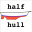
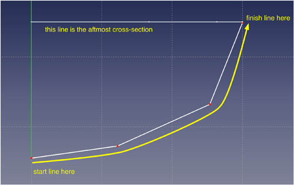
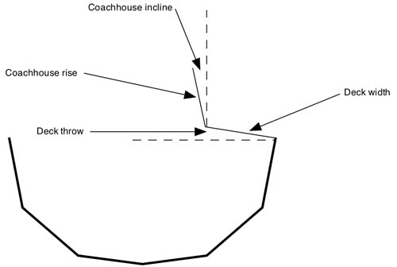
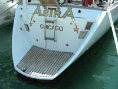
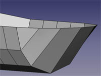

 Mezzo scafo |
| Descrizione |
|---|
| Partendo da una serie di disegni 2D, questa macro genera un modello tridimensionale di mezzo scafo o dello scafo completo. |
| Autore |
| Piffpoof |
| Link |
| Esempi di macro Come installare le Macro Personalizzare la barra degli strumenti |
| Versione |
| 1.0 |
| Data ultima modifica |
| 2016-01-25 |
Questa macro crea dei semplici modelli di scafi di imbarcazioni e di navi. Essa aiuta chi modella o progetta scafi, fornendo in modo veloce e semplice la superficie dello scafo, e riduce il tempo necessario per tutto il processo.
Introduzione
Fin dall'antichità i costruttori di barche hanno dovuto progettare le barche e poi realizzarle in un ambiente tridimensionale dove poche linee sono rette, poche superfici sono piane e sulla distanza non ci sono angoli costanti. Dello scafo veniva costruito un modello in scala che serviva per rivedere il disegno o per comunicare i concetti ad altre persone. Le leggi dell'idrodinamica richiedono che qualsiasi imbarcazione che passa attraverso un liquido deve avere la sezione trasversale simmetrica se deve muoversi in una linea retta. Di conseguenza, nel modello basta costruire metà dello scafo - se il mezzo scafo è perfetto, anche la sua immagine speculare è perfetta. In questi ultimi anni i mezzi-scafi sono stati utilizzati per creare dei simboli, come, ad esempio, le targhe, e nell'arte nautica.
Questo codice deriva da un progetto fatto per costruire in FreeCAD il modello di una barca a vela di 12,5 metri. I costruttori non avevano più i disegni, e il figlio del proprietario originale dubitava che i disegni completi fossero mai esistiti. Di conseguenza, si dovevano misurare le dimensioni dello scafo e poi costruirne il modello in un software. I pacchetti di software moderni, come FreeCAD, offrono molte caratteristiche utili, come ad es. i vincoli di simmetria, ma quando l'obiettivo finale è un modello che sia "bello da vedere", esso deve essere "massaggiato" a lungo. Questo codice è stato scritto per aiutare ad automatizzare questo processo.
Lo scopo iniziale di questo codice era quello di fornire uno scafo simmetrico che fosse malleabile e adattabile al modello 3D in costruzione. Poiché il software si è evoluto è stato generalizzato e speriamo che sia utile a chi:
- progetta imbarcazioni o produce schemi per costruire delle barche
- costruisce barche e sta cercando di modellare ciò è descritto nello schema
- costruisce modelli di scafo.
Certamente i progettisti di imbarcazioni commerciali per sviluppare il loro lavoro utilizzano dei software di fascia alta, questa macro non ha intenzione di sostituirli, ma può essere utile all'hobbista.
I progetti navali hanno una storia diversa rispetto a quella degli edifici e quindi anche la presentazione è un po' diversa. Ecco un esempio di una barca a vela che ha più di un secolo:

Tra gli obiettivi finali di questo software c'è quello di utilizzare l'ambiente Draft per generare alcuni di questi schemi, utilizzando il modello originale per generare le linee.
Note sulle Unità di misura in FreeCAD:
Al momento, in FreeCAD non c'è ancora nessun Sistema di gestione delle unità di misura, ma ovviamente un costruttore di barche o modellatore ha bisogno di un sistema di dimensionamento accurato. Per utilizzare questa macro, si deve impostare la griglia di FreeCAD con la dimensione appropriata al lavoro (per esempio mm, cm, pollici, piedi). FreeCAD è coerente, una unità di FreeCAD sarà sempre uguale a una unità di FreeCAD. Se avete deciso che una unità FreeCAD corrisponde a una determinata lunghezza fisica, allora i vostri disegni rimarranno dimensionati coerentemente. Al momento si sta lavorando su un Sistema di unità per FreeCAD, quindi questa situazione potrebbe cambiare presto.
Descrizione
Per questa macro, le forme della carena sono definite da un minimo di 3 schizzi di FreeCAD: uno nel piano YZ, uno o più nel piano XZ e uno nel piano XY. Qui è presentato lo scafo minimo supportato da questa macro, ha solo 3 schizzi:

Nota: nello schema precedente stiamo guardando direttamente a poppa, la prua è rivolta in direzione opposta al punto di vista.
Da davanti a dietro (da prua a poppa) i 3 schizzi sono:
| linea di prua |
piano YZ |
linea rossa nello schizzo |
| sezione trasversale |
piano XZ |
linea verde nello schizzo |
| specchio di poppa |
piano XY |
linea blu nello schizzo |
Forse è più facile da vedere con 7 schizzi (uno nel piano YZ, uno nel piano XY e 5 nel piano XZ):
Con 5 schizzi nel piano XZ è più facile cominciare a percepire la forma dello scafo. Le prossime 2 immagini mostrano le linee di disegno sovrapposte al modello che FreeCAD produce,
questa seconda figura riproduce lo stesso modello ruotato di 90 gradi, con la prua in primo piano:
Alcuni punti da prendere in considerazione:
- gli schizzi sono solo per:
- la stemline (o linea di prua) nel piano YZ (rossa nello schema sopra);
- la parte superiore dello specchio di poppa nel piano XY (blu nel diagramma);
- diverse sezioni dello scafo nel piano XZ (verde nello schema precedente)
- negli schizzi si disegna solo il lato di dritta dello scafo, il lato di babordo verrà generato come immagine speculare
- ogni linea multisegmento deve essere disegnato in uno schizzo separato
- ogni schizzo deve avere lo stesso numero di segmenti (che è 3 negli esempi precedenti)
- più segmenti di linea ci sono in ogni Schizzo e più il modello prodotto da FreeCAD si avvicina a uno scafo curvo
- non vi è alcun limite al numero di segmenti di ciascuno schizzo, qualsiasi numero da uno in poi
- non vi è alcun limite al numero di schizzi nel piano XZ (cioè le sezioni), qualsiasi numero da uno in poi
Con sufficienti schizzi il modello generato diventa verosimile:

La macro HalfHull genera 4 modelli:
- mezzo scafo di dritta
- mezzo scafo di babordo
- scafo completo
- paratie per lo scafo completo, sia con un ponte raso che per un ponte con cassero
Questi modelli sono tutti prodotti nella posizione unificata dello spazio di FreeCAD in modo che possano essere assemblati - per esempio le paratie possono essere inserite perfettamente nello scafo completo. Questa è una foto delle paratie di un modello di barca in costruzione:

Così come le paratie generate dalla macro (notare che queste paratie sono per un cassero e non per un ponte raso):

L'immagine composita sottostante mostra i principali risultati prodotti da questo software (attualmente il mezzo scafo di babordo non è mostrato ma è lo specchio del mezzo scafo di dritta che è mostrato). I prodotti sono in senso orario dall'alto a sinistra:
- mezzo scafo di dritta
- scafo completo
- paratie (per ponte raso, le paratie dell'immagine precedente erano per un ponte con cassero)
- lo scafo completo con le paratie inserite
Come nuove caratteristiche, opzionalmente la macro può anche produrre targhe per i mezzi-scafi, o una bottiglia per lo scafo completo:

Installazione
Tutto il codice di halfHullModel.FCMacro è contenuto in una macro, quindi per installarla basta copiare il suo codice nella appropriata directory delle Macro. Dopo, si può invocare halfHullModel.FCMacro dal menu Macro, dalla console Python o da un pulsante della barra degli strumenti (il metodo preferito).
- per informazioni su come installare il codice delle macro vedere la pagina Come installare le macro
- per informazioni su come installarla abbinata a un pulsante in una barra degli strumenti vedere la pagina Personalizzare la barra degli strumenti
Utilizzo
Le operazioni FreeCAD coinvolte nella generazione del modello dello scafo sono piuttosto complesse e numerose. Alcune cose come, ad esempio, la direzione in cui viene disegnata una linea possono portare FreeCAD alla costruzione dello scafo o al fallimento o a produrre deformazioni come questa:

Di conseguenza, i passaggi successivi devono essere seguiti attentamente. La macro non consente alcune incongruenze di dati, in generale se i dati (cioè gli schizzi) non sono corretti il prodotto è simile a una grattugia oppure il riempimento della macro fallisce con un errore.
Le successive istruzioni si riferiscono ai quadranti del grafico XY, dove i 4 quadranti sono etichettati in questo modo:
Creare un Nuovo Documento
La prima cosa da fare è quella di creare un nuovo documento in FreeCAD  . Questo documento conterrà tutti gli schizzi che compongono la definizione dello scafo.
. Questo documento conterrà tutti gli schizzi che compongono la definizione dello scafo.
Creare la linea di prua
Il primo passo consiste nel creare i dati per il modello dello scafo che si vuole realizzare. I dati sono forniti in forma di schizzi interni a FreeCAD. Quando il modello dello scafo è stato generato, per apportare delle modifiche basta semplicemente editare gli schizzi, e poi eseguire ripetamente la macro.
- creare un nuovo schizzo
 nel piano YZ
nel piano YZ - partire dall'origine (0,0) e disegnare verso l'alto nel Quadrante I

- l'estremità inferiore della linea di prua (stemline) si trova nell'origine (0,0) - questo è il punto rispetto al quale verrà effettuato il posizionamento di tutte le sezioni e dello specchio di poppa
- il numero di segmenti della linea di questo schizzo è il numero che sarà richiesto in tutti gli altri schizzi
- salvare lo schizzo
- per facilitarne l'identificazione, probabilmente vale la pena di rinominare lo schizzo con un nome simile a "schizzo della linea di prua"

Creare gli schizzi delle sezioni trasversali
- creare un nuovo schizzo nel piano XZ
- appare la seguente finestra di dialogo:

La finestra di dialogo chiede a quale distanza dall'origine deve essere posto lo schizzo. Questo stabilisce la distanza della sezione trasversale dal fondo della linea di prua (che si trova in (0,0)). Le sezioni possono essere equidistanti, ma non è obbligatorio. La sezione più avanzata sarà a Y=0 (cioè l'origine in cui si trova l'estremità inferiore della linea di prua) o a Y<=0. Le sezioni saranno sempre posizionate a valori negativi di Y dato che lo specchio di poppa si trova al massimo valore negativo di Y. Nell'esempio precedente, lo schizzo della sezione è collocato a una distanza di 50 unità di FreeCAD dall'origine, sull'asse Y negativo. - cominciare dall'asse Y e disegnare verso l'alto nel quadrante I
- la prima (cioè principale) sezione dovrebbe iniziare all'origine (0,0) (o avrà una strana forma dato che la linea di prua termina a 0,0), ma per le altre sezioni basta iniziare sull'asse Y. - per la linea utilizzare lo stesso numero di segmenti utilizzati nello schizzo della linea di prua
- salvare lo schizzo
- per ripetere questo passaggio indispensabile, può essere più veloce copiare questo disegno e poi distribuire le copie sull'asse Y, alle singole copie si possono apportare le modifiche necessarie
- per la denominazione, dare una sorta di sequenza alle sezioni renderà le cose più facili, iniziando da prua (cioè dalla linea di prua) e incrementando la numerazione verso poppa (cioè lo specchio di poppa)

{kind=link}
{kind=link}
{kind=link}
{kind=link}
{kind=link}
{kind=link}
{kind=link}
{kind=link}
{kind=link}
Creare lo schizzo dello specchio di poppa nel piano XY
- creare un nuovo schizzo nel piano XY
- iniziare sull'asse Y tra quadranti III e IV, e disegnare verso l'alto nel quadrante IV in modo che il punto finale coincida con il punto più a destra dello schizzo della più piccola sezione creata nel piano YZ
 - per la linea utilizzare lo stesso numero di segmenti utilizzati nello schizzo della linea di prua
- salvare lo schizzo
- per facilitarne l'identificazione, probabilmente vale la pena di rinominare lo schizzo con un nome simile a "schizzo dello specchio di poppa"
{kind=link}
Salvare il Nuovo Documento
Ora salvare il documento  che contiene gli schizzi che definiscono la forma dello scafo, dandogli un nome descrittivo
che contiene gli schizzi che definiscono la forma dello scafo, dandogli un nome descrittivo
Quando tutti gli schizzi sono stati creati e posizionati, nella vista dall'alto  il documento dovrebbe essere simile a questo:
il documento dovrebbe essere simile a questo:
{kind=link}
Le principali limitazioni per costruire il modello sono:
- l'estremità inferiore della linea di prua deve terminare in (0,0)
- l'estremità inferiore del centro di ogni sezione dovrebbe terminare in corrispondenza dell'asse Y - notare che può avere qualsiasi valore Z
Questo conclude la prima parte che consiste nel creare i dati che la macro utilizza per creare due mezzi scafi o uno scafo completo. La seconda parte è descritta nella sezione seguente ed è intitolata Interfaccia utente
Interfaccia utente
In questa fase la macro raccogliere alcune informazioni dall'utente e quindi elabora gli schizzi input per generare i modelli di scafo desiderati. Questa è l'immagine dell'unica GUI della macro che permette di configurare i principali dettagli per la produzione dei modelli di scafo dagli schizzi:

Nella finestra GUI si può sceglire:
- Starboard half-hull
- selezionando questa casella la macro produce un modello mezzo scafo di dritta- Mounting plaque
- se selezionata la macro inserisce il mezzo scafo su una targa- Allow space for keel
- se selezionata il mezzo scafo viene inserito nella parte superiore della targa, e al di sotto dello scafo può essere collocata una chiglia generata separatamente
- Allow space for keel
- Mounting plaque
- Port half-hull
- se selezionata la macro produce un modello mezzo scafo di babordo- Mounting plaque
- se selezionata la macro inserisce il mezzo scafo su una targa- Allow space for keel
- se selezionata il mezzo scafo viene inserito nella parte superiore della targa, e al di sotto dello scafo può essere collocata una chiglia generata separatamente
- Allow space for keel
- Mounting plaque
- Complete hull
- selezionando questa casella la macro produce un modello completo- Bottle for complete hull
- se selezionata la macro inserisce lo scafo completo in una bottiglia trasparente (completo di tappa in sughero)- Allow space for keel
- se selezionato il mezzzo scafo viene posizionato nella parte superiore della bottiglia rispetto alla posizione centrale, e al di sotto dello scafo può essere collocata una chiglia generata separatamente
- Allow space for keel
- Bottle for complete hull
- Bulkheads for flush deck
- selezionando questa casella la macro produce delle paratie con la parte superiore allineata alla parte superiore dello scafo, le paratie non sono generate per le prime 2 sezioni di prua o le ultime 2 sezioni di poppa - paratie per ponte raso - Bulkheads for coachhouse
- selezionando questa casella la macro produce delle paratie con la parte superiore al di sopra della parte superiore dello scafo - paratie per ponte con cassero.- Bulkheads to skip at bow - Paratie da omettere a prua determina il numero di sezioni trasversali da lasciare senza paratie a prua
- Bulkheads to skip at stern - Paratie da omettere a poppa determina il numero di sezioni trasversali da lasciare senza paratie a poppa
- La dimensione della parte superiore delle paratie è configurata secondo il seguente schema:
 - Pulsante Cancel
- l'esecuzione viene interrotta e si chiude la finestra - Pulsante Re-Use Last File
- l'esecuzione utilizza il file di dati e le impostazioni dell'ultima esecuzione, le modifiche alle impostazioni vengono ignorate - Pulsante Select File
- si apre la finestra standard Apri file in cui l'utente può selezionare un file o Annulla e uscire
{kind=link}
Quando viene eseguita, la macro prende i dati di configurazione dall'utente e poi legge gli schizzi di Sketcher nel file di input selezionato.
Nota: Dato che la macro opera attraverso gli schizzi essa stampa le eventuali eccezioni e alcuni passaggi chiave nella Vista Report. Se si ottengono dei risultati imprevisti o mancano alcune parti, probabilmente è il primo posto in cui conviene guardare.
Opzioni
Per le imbarcazioni ci sono molti tipi di prue e di poppe, e ci sono più varietà di poppe che di prue. Ecco alcuni esempi di specchi di poppa e di prue dal mondo reale affiancate dall'analogo prodotto della macro:
Poppa Sheer
La poppa quadra è probabilmente la più comune, è utilizzata per imbarcazioni di qualsiasi dimensione, dalle navi commerciali fino alle barche a remi.
 |
 |
- lo specchio di poppa XY deve essere il più vicino possibile all'ultima sezione verso la poppa.
Poppa Sugar-Scoop
È probabile che si trovi su una barca a vela, è un prodotto studiato per massimizzare la lunghezza della linea di galleggiamento per beneficiare delle regole sulle classi nelle competizioni a vela.
|  |  |
{kind=link}
- posizionare le ultime 2 sezioni il più vicino possibile alla poppa, poi ruotare l'ultima sezione di poppa di un angolo di 45 gradi (o di quanto è necessario) intorno all'asse X
Poppa a canoa
Si trova su tutti i formati di natanti, a motore e a vela, da diporto e commerciali.
 |
 |
{kind=link}
- posizionare le ultime 2 sezioni il più vicino possibile alla poppa, poi ruotare l'ultima sezione di poppa di un angolo di 45 gradi (o di quanto è necessario) intorno all'asse X
Prua normale
Ci sono molte meno varietà di forme di prua che non di poppe:
 |
{kind=link}
Prua Trireme
Anche se negli ultimi 2 millenni non si vede molto spesso, in passato, questa era il profilo definitivo della prua per le navi belliche:
 |
 |
- per ottenere una forma corretta la polilinea per la prua deve essere disegnata dal basso verso l'alto, questo significa che nello schizzo deve andare da destra verso sinistra
File di esempio
Questi file contengono gli schizzi con i dati campione da utilizzare con la macro, e sono soprattutto i modelli per le schermate riprodotte nella precedente sezione Opzioni. I file funzionano con la Macro, quindi possono essere scaricati e riprodotti per adattarli alle proprie specifiche esigenze. Il prefisso di 5x3 (ad esempio) significa che il modello è dotato di 5 sezioni e che ci sono 3 segmenti di linea per ogni sezione (i.e. sketch)
Per utilizzare uno dei file di esempio, fare clic destro sul link del file e selezionare Salva file ... dal menu. Sarà specificato il nome del file, scegliere la cartella o directory desiderata per contenere il file di esempio.
- 3x1 hull con il numero minimo di Schizzi (stemline, una sezione, specchio di poppa) (prua, una sezione, specchio di poppa) e 1 segmento di linea in ogni schizzo <<<<< Attualmente non funziona
- 5x3 con la prua normale
- 5x3 con la prua trireme
- 5x3 con lo specchio di poppa canoa
- 5x3 with sheer transom stern
- 5x3 with sugar scoop stern
- 5x5 workboat
- 7x5 pirate boat
- 12x3 sailing yacht
Osservazioni
- quasi tutti gli esempi di questa pagina sono generati usando solo 3 segmenti per definire il lato dello scafo e questo gli conferisce un aspetto molto sfaccettato, aumentando il numero di segmenti in ciascun schizzo si genera una superficie più liscia che aumenta il realsismo
- non fa chiglie, pinne o timoni, in altre parole, non fa nulla dell'area bagnata
- non fa prue quadrate come spintori o chiatte trainate
- non fa sommergibili (anche se fa la metà inferiore di un sottomarino)
Problemi noti
Per generare sezioni scafo dagli schizzi viene utilizzata la funzione 'Superficie rigata' di FreeCAD. A volte può generare un risultato sbagliato e visualizzare una grattugia come superficie invece di una superficie liscia. Questo in genere si verifica quando i disegni sono ruotati come, ad esempio, quando si modella una poppa Sugar Scoop. Questo può capitare anche inclinando un specchio di poppa quadro. Se succede questo, in genere avviene nei due modelli mezzo-scafo oppure nel modello dello scafo completo - sembra che non si verifichi mai in tutti e tre i modelli dello stesso scafo. Inoltre, di solito, succede solo all'estremità di prua o di poppa. Se capita in una sezione nel mezzo della barca è molto probabile che uno degli schizzi sia stato redatto nella direzione sbagliata (cioè o con sequenza casuale o dall'alto verso il basso mentre invece tutte le linee devono essere tracciate dal basso verso l'alto)
Di solito, si può correggere la distorsione nel seguente modo:
- nella scheda Modello della vista combinata, fare clic sull'elemento difettoso per selezionarlo, e il segmento difettoso appare evidenziato sul display
- selezionare la scheda dati alla fine della Vista combinata, la parte inferiore della finestra contiene una etichetta "Ruled Surface" con il solo parametro 'Orientation'
- a destra c'è un menu a comparsa con i valori 'Automatic', 'Forward', 'Reversed', che inizialmente è impostato su 'Automatic'
- provare una delle altre impostazioni (ricordando che il segmento difettoso deve ancora essere selezionata nella parte superiore della Vista combinata) e di solito questo corregge il problema
La seguente schermata mostra la parte dello schermo interessata:

Future possibilità
- nelle sezioni sostituire i segmenti con linee curve
- per ora questo è solo un'idea, ma si otterrebbe una superficie molto più liscia nella parte verticale, mentre la superficie orizzontale continuerebbe ad essere sfaccettata come lo è ora - integrazione la macro con l'ambiente Draft per produrre i disegni dei modelli
- un obiettivo iniziale, ma la fattibilità non è stata verificata - gestire chiglie, timoni e pinne
- con l'attuale sistema la chiglia può essere modellata come un mezzo scafo indipendente e poi montata sul fondo dello scafo principale; però questo non riguarda i timoni e le pinne
Glossario
Come per qualsiasi settore antico e pratico, intorno alle navi, alle imbarcazioni e alle pratiche nautiche si è sviluppato un vocabolario ricco e talvolta confuso. Nel descrivere questa macro è scomodo e inefficiente descrivere il processo senza utilizzare dei termini corretti e precisi. È evidente che non tutti hanno familiarità con questa terminologia, quindi ecco questo vocabolario:
| poppa | la parte posteriore di una barca |
| chine spigolatura | la sfaccettatura piana di uno scafo, può essere utilizzata per approssimare una superficie curva o come tecnica di finitura |
| cassero | la parte del ponte centrale che si eleva al di sopra del livello del ponte - di solito per ospitare maggiore altezza libera all'interno della barca |
| ponte raso | un ponte che dalla parte superiore corre liscio da un lato dello scafo all'altro, l'inverso di un ponte con cassero |
| prua | la parte anteriore di una barca |
| babordo | il lato sinistro guardando avanti, verso la prua |
| dritta o tribordo | lato destro guardando avanti, verso la prua |
| linea di prua | il bordo inclinato verticale che è la prua di uno scafo |
| specchio di poppa | il bordo superiore curvo della faccia di poppa che può essere piana o curva |
Link
- Half Hull Model Ship (Wikipedia)
- Why Half Hulls (Maritime Half Hull Ship Models and Nautical Art website)
- Traditional Model Yacht Design (US Vintage Model Yacht Group)
Script
Questo script funziona senza bug. Ma a causa della grande varietà di possibili input può fallire per alcuni input. Se succede siete pregati di segnalarlo.
Lo script è troppo lungo per essere visualizzato nel Wiki quindi deve essere copiato o scaricato da unabbreviated script on pastebin.com